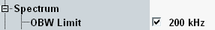

Occupied Bandwidth Limits
The occupied bandwidth is the bandwidth that contains 99 % of the total integrated power of the transmitted spectrum. According to 3GPP, the occupied bandwidth must be less than the theoretical channel bandwidth (200 kHz). The limit for the occupied bandwidth can be set in the configuration dialog.

OBW limit setting